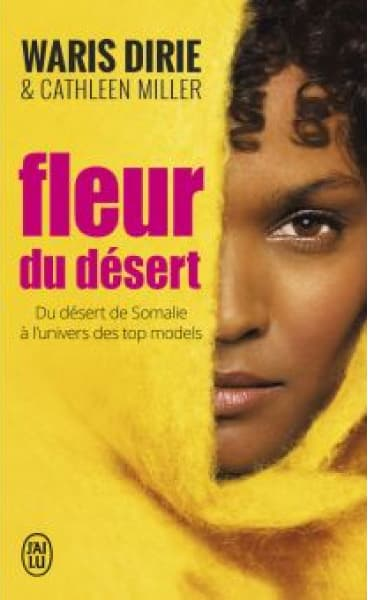
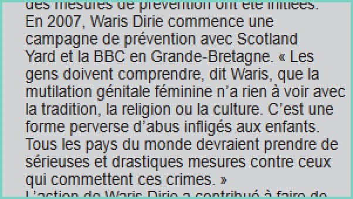

Waris Dirie is a woman born the 21th October, in 1965 in GaalKacyo in Somalia, of Somali and Austrian nationality.
Waris fled at the age of 13 when her father decided to marry her to a 60-year-old man.
It was when she was working in a fast food restaurant that Waris was noticed by a famous photographer Terence Donovan.
A modeling career began in 1987 on the cover of “Calendar Pirelli ”.
During an interview Waris reveals the excision of which she was the victim at the age of 5 years.
She wrote her first autobiographical book "Desert Flower" in 1998, his book being the best known.
She writes other books like :
Dawn of the Desert, A Letter to My Mother, Black Women, White Country, Safa and Desert Children.
It was during an interview with Marie Claire magazine in the mid-1990s that she decided to testify about her excision and that of the thousands of girls and women who still undergo it in Africa.

It fights against excision
It started in 2002, when she decided to talk about it.
She decided to create the “WARIS DIRIE FOUNDATION”.
In February 2005, she met 25state ministers member to discuss measures to be taken to fight against FGM.
In 2006, theEuropean Union combats official excision for the first time in history.
In 2007, Waris Dirie started a prevention campaign with Scotland Yard and the BBC in Great Britain.
Warris said :
« People need to understand that female genital mutilation has nothing to do with tradition, religion or culture.
It is a perverse form of child abuse. All countries of the world should take serious and drastic measures against those who commit these crimes. »

Thanks to pressure from the international community, 14 African states including Kenya, Ghana, Burkina Faso, Côte d'Ivoire, the Republic of Central Africa, Benin and Togo have declared the practice of female circumcision completely. illegal since 2007.
In January 2009, she became a member of the Board of Directors of the new PPR Corporate Foundation for Dignity and Women's Rights, supporting around twenty projects in partnership with NGOs local and international, in particular in Mali, India, Pakistan, Nicaragua and France.
Waris is a woman who has gone through a lot in her life, mainly in her childhood, which was intense and not always very happy.
In the article “Flower of the Desert”, a small part of his life will be reviewed.